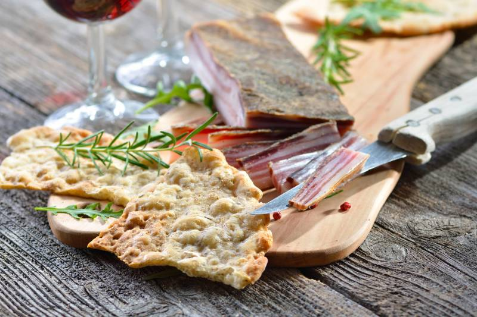

Schüttelbrot is a traditional flatbread originating from South Tyrol, or to be precise, the Isarco valley, in particular in Fiè allo Sciliar. It's usually made with a combination of rye flour, wheat flour, yeast and sugar, salt, oil, and herbs and spices such as fennel, cumin, and fenugreek.
Meal prep time : 1 hour 30 minutes
Servings : 6